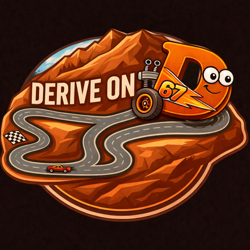
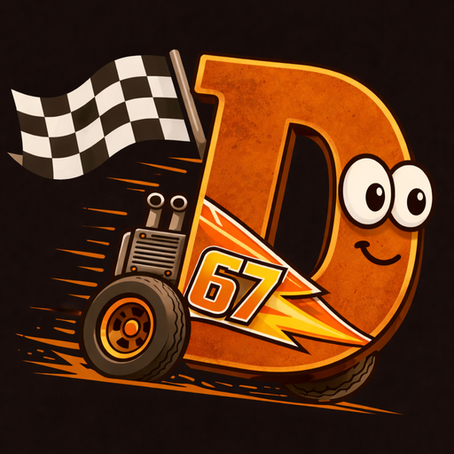

New run
Tools
Analysis
Review runs
Calibrate
Tune color & scale
Challenge
Race the ghost
Saved runs


Review runs
Tune color & scale
Race the ghost
Enter car real width. Draw a tight box around the car to lock scale.
Click the car in the video to sample its color.
Click 4 corners of the track area (TL→TR→BR→BL) then enter real dimensions.
| t (s) | s (cm) | v̄ (cm/s) | v (cm/s) | a (cm/s²) |
|---|
No stats saved for this run.